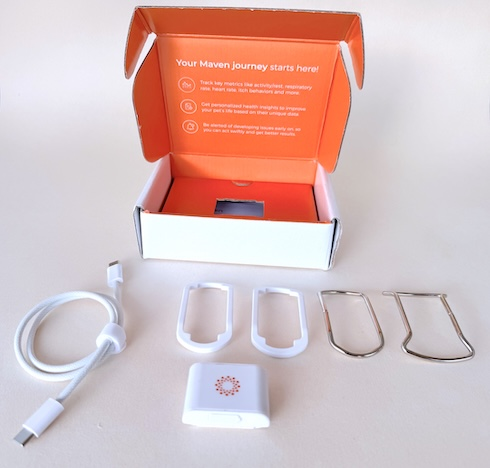
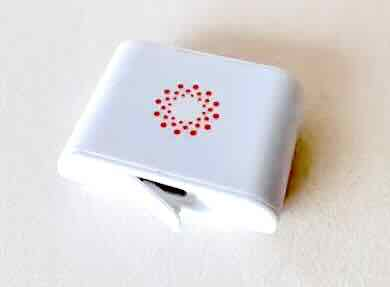
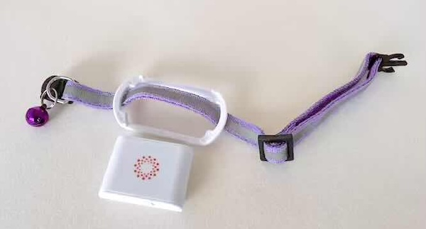
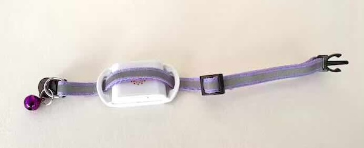
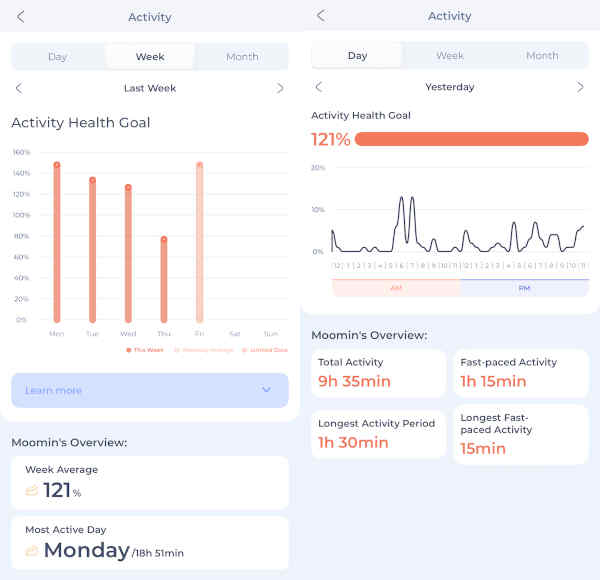

The Maven Smart Collar: A Veterinary Cardiologist’s In-Depth Review
How does it measure up to the traditional approach?
Published on: January 12, 2026
Reviewed on: January 12, 2026
“Is it serious? Should I be worried?”
These are the questions I hear most often from pet owners when we discuss heart disease. In veterinary cardiology, our biggest hurdle is that we often do not spot the signs of congestive heart failure (CHF) until a crisis occurs. By the time a pet is “gasping” for air, we are already in an emergency situation.
We have talked extensively on this channel about the importance of monitoring the sleeping respiratory rate (SRR) as the “gold standard” for home care. But let’s be honest: manual counting is hard to do consistently. Between the pet moving and the owner’s own anxiety, getting a clean 30-second count is a challenge.
I have been genuinely excited at the possibilities raised by the invention of decent tracking devices to help monitor pet health. They can solve many of the tricky problems that lead to missed early warning signs. Today, I am taking an in-depth look at the Maven Smart Collar. It is the first device I have been able to test that has published peer-reviewed research verifying its ability to monitor SRR, with further data pending regarding heart rates in dogs.
While formal publications for cats are still awaited, my experience using it with my own cat has been eye-opening.
1. Getting Set Up: Hardware and Fit
The Maven arrives in a neat presentation box and the setup is quite straightforward. It is important to note that the unit does not come with its own collar; instead, it provides multiple adapters to fit your existing collar.

Technical Specifications & Fitting
-
Charging: Standard USB-C port, covered with a plug to aid water-proofing. I haven’t tested how waterproof the device is - but it coped fine in the typical wet Welsh weather during testing
-
Collar Adapters: It includes two white adapters with a 17mm cut-out (ideal for most standard collars) and metal adapters for larger widths (25mm and 36mm).

-
Dimensions: Approximately 30mm x 40mm x 15mm (1.2 x 1.5 x 0.6 inches). This is small - but not tiny. It may still feel slightly bulky on smaller cats and toy breed dogs.

-
Weight:Roughly 15g, or half an ounce. Which is remarkably light.
-
Orientation: This is crucial for accuracy. The side with the Maven logo and the green LED must face away from the pet and sit against the collar. So the device sits in between the collar and your pet’s fur.
Key Tip for Cats: I strongly recommend a quick-release safety collar for cats. However, ensure it is robust enough that it won’t come away too easily. Because the device lacks GPS, if it is lost in a field, there are no “find my pet” features in the app to help you track it down.

Fitting:
Place adapter on collar:
Place device between collar and adapter and click into place:
Attach so that device sits between neck and collar. With logo facing away from your pet and towards the collar:

2. Basic Use and Connectivity
The Maven is designed to stay on permanently, apart from brief charging breaks. Unlike many consumer trackers, it does not have a cellular data connection or GPS.
From a clinical perspective, this is a clever trade-off. By removing GPS, the manufacturer has minimised weight and maximised battery life. The device simply updates your data via the app whenever the pet is back within your home Wi-Fi network.
The Maven team claim up to 7 days of battery life is possible, which probably depends on things like how active your pet is and how much time they spend in and out of wifi range. I found the battery lasted about five days but that is with an outdoorsy cat that probably isn’t in wifi range much at all.
Note on Data Latency: Because it relies on Wi-Fi, you won’t get “real-time” updates during a walk. I found the data in the app is typically about an hour behind real-time.
3. The Clinical “Gold Standard”: Sleeping Respiratory Rate (SRR)
The primary reason I recommend this device is its ability to accurately count the SRR. As we have discussed, this is one of the most useful cardiology markers we have.
The Maven performs multiple SRR counts throughout the day and night. In my testing, the data looked very reliable. I cross-referenced the app data with manual counts of my own test subject, and the results were consistently close.
Key Takeaway: For any pet at risk of CHF, seeing a stable trend line below 30 bpm provides immense peace of much-needed peace of mind.

There is a published peer-reviewed study documenting the accuracy of the device already, for those interested parties. I’m super pleased to see the manufacturer claims being backed up properly with clinical trials [1].
4. Resting Heart Rate (HR)
The Maven also tracks resting heart rate. Usually, pets in a hospital environment have very abnormal heart rates due to stress. Obtaining a true “at-home” resting heart rate is a significant clinical advantage.
While we are still defining exactly how to use this data clinically (especially in cats, where we rarely see true “rest” heart rates without a Holter monitor), it offers fascinating future possibilities.
The Early Warning System: In theory, we should see resting heart rates climbing before changes appear in the SRR. The heart works harder to control pressures until it can no longer manage, at which point lung fluid builds and the SRR rises. Therefore, elevations in resting HR may serve as an extra early warning to schedule a recheck or an echocardiogram.
A clinical study comparing heart rate counts is apparently being finalised currently.

5. Activity and Sleep Quality
The activity monitoring revealed some of the most surprising data. As the owner of an outdoor cat, I was fascinated to see his peak activity occurred in the early hours before dawn. This explains why he seems so lazy during the day!
[Image - activity graph from app]
For a pet with heart disease, a slow “drift” downward in activity or an increase in night-time restlessness can be an early “red flag.”
How Maven Reports Data:
-
Activity Goal: A percentage based on the pet’s age and health. This can be seen hour by hour or day by day or week by week.

-
Flow Chart: A step-by-step detail of their day/night activity.
-
Sleep Info: An overall “time spent resting” figure, which is helpful for spotting discomfort or dyspnoea.

The sleep data may be a bit less useful for cat’s - as their constant ‘cat napping’ can be hard to separate from true restlessness. But it does do a daily sleep count, which is very hard to do any other way and should prove another useful health marker.
Extras:
The device also monitors head shaking. Given that ear disease is one of the most common problems in dogs this is also potentially quite useful information. Usually this is something people can see easily for themselves but I believe having an objective measure would be very useful for pets with severe chronic ear issues.
The use of the device /Users/davidevans/Library/CloudStorage/Dropbox/Dave Documents/Vet/Online Content/Blog articles/maven imagesfor tracking activity in dogs and cats with osteoarthritis, is another interesting area. A pioneering study has already looked at this. I can see a lot of benefit again, although maybe if you were chiefly worried about exercise patterns a collar with GPS might be a better fit to consider [2].
There's even been a study looking at the sleep data as a marker for canine dementia (canine cognitive dysfunction). Which is really fascinating for future applications.
6. Separating Signal from Noise
The challenge with any smart device is “data overload.” The Maven does a good job of learning your pet’s typical levels and alerting you to changes. After spending the 1st week ‘learning’ your pet, it gives a short summary on the app home screen.

However, you must learn to separate the signal from the noise.
If the SRR jumps above 30 once and then returns to normal, it likely indicates the pet was awake or anxious at that moment. The power of the device is in seeing a whole night’s worth of counts. This helps you and your vet decide if a problem is truly brewing or if it was just a temporary upset (like fireworks, or outside intruder, or weather changes, or one of many other things).
This is why I would probably encourage pet parents to focus on the mean data line, rather than get too worried about the maximum and minimum numbers.

7. The Maven Collar: Pros and Cons
| Feature | The "Good" | The "Could Be Better" |
|---|---|---|
| SRR Tracking | Multiple reliable counts; peer-reviewed validation. | Occasional outliers if pet is awake. But this is to be expected. |
| Battery & Charging | Solid 5-day life; standard USB-C. | Charging can be "fussy" sometimes; may need to watch the LED. |
| Connectivity | No expensive data plan needed (Wi-Fi based). | No updates while away from home Wi-Fi. |
| Physical Design | Very lightweight (15g). | A little bulky for cats. No GPS; difficult to find if lost outside. |
| Activity | Sets a benchmark target and constantly assesses whether being met. | No step count, or distance/calorie info. |
| Clinical Insights | Tracks Resting HR and Night Restlessness. | No Heart Rate Variability (HRV) or arrhythmia detection. |
8. Final Verdict: Is it worth it?
So, who is this for?
If your pet is in ACVIM Stage B2 (high risk of future heart failure) or has previously suffered from heart failure and is currently on diuretics, the Maven is a powerful adjunct to your care plan. Even if your pet is earlier in the disease, or just had a heart murmur detected, I can see a lot of benefit in using one.
It does not replace an echocardiogram - that remains mandatory for diagnosis, but it makes the home monitoring part of our partnership much easier. The power is in the trend, not the single number. If you see that SRR baseline starting to creep up, you can call your vet before the crisis hits.
But don’t forget, in many cases there are preventative steps and medications you can be using before your pet reaches heart failure, so don’t assume that nothing needs doing, just because a device is giving an all clear. These devices will only be useful as congestive heart failure approaches.
I am hoping to get some real-world comparisons with some of the other available devices soon, but for now I can see a huge benefit in using this device in keeping a constant check on your pet. Mainly if you have specific cardiac worries, but potentially useful for keeping an eye on ear disease, osteoarthritis and even cognitive function, as well as general health in all pets.
And what about costs?
The Maven device currently relies on a subscription model.
The device is currently provided completely free of charge. You then pay a monthly or annual fee to subscribe to it's cloud services (currently around $20 / £15 per month, cheaper on the annual plan). Get 10% off with our codes below, or watch out for special offers too. As a way to test the device out for yourself, at minimum commitment, this is pretty reasonable I think.
Clinical Summary
-
For CHF Risk: Highly recommended for SRR and activity trends.
-
For Arrhythmias: If you are specifically looking to detect rhythm disturbances (like Atrial Fibrillation), you may need a device with HRV capabilities or a clinical Holter monitor.
Partnership with your vet is how we keep our pets healthy for longer.
Interested in the Maven? You can use the link below to receive a discount on your subscription and support the VetCardioHub channel.
For transparency, Maven sent me this unit free of charge for testing. If you choose to sign up via the link at the end of this article, the hub receives a small commission to help with our running costs.
See our full comparison of Tracking Collars here.
Check out my video review here:
References:
- Murphy KE, Benjamin EJ, Leigh R, Adin D. (2025) The Maven Pet Smart Collar system shows small bias compared to manually counted resting respiratory rates in healthy dogs. Am J Vet Res. 87(1):ajvr.25.06.0220.
- Sacoor C, Leitão S, Domingues C, Babo J, Sá CM, Cabeças R, Queiroga FL. (2025) Continuous Activity Monitoring Using a Wearable Sensor in Dogs with Osteoarthritis: An Exploratory Case Series. Animals (Basel). 15(18):2639.
- Ehrenzweig J, Easler C (2025). Prospective Evaluation of a Mushroom Derived Nutraceutical in Dogs with Cognitive Decline. 10.13140/RG.2.2.23066.30402.